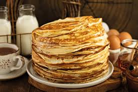

crepes
liste des ingrédients
4 œufs
250 g de farine
60 g de sucre pour les crêpes sucrées
2 pincées de sel
1 sachet de sucre vanillé
80 cl de lait
2 cuillères à soupe d'huile
du beurre pour la cuisson des crêpes
Préparation
Mettez la farine dans un saladier avec le sel et le sucre.
Faites un puits au milieu et versez-y les œufs.
Commencez à mélanger doucement. Quand le mélange devient épais, ajoutez le lait froid petit à petit.
Quand tout le lait est mélangé, la pâte doit être assez fluide. Si elle vous paraît trop épaisse, rajoutez un peu de lait. Ajoutez ensuite le beurre fondu refroidi, mélangez bien.

source